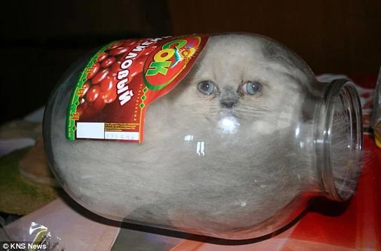

O Caso dos 'Bonsai Kittens': O boato que desafiou a internet nos anos 2000
Entenda como um site satírico criado por estudantes se transformou em um dos primeiros grandes pânicos morais da web.

No início da popularização da internet, um site gerou revolta global ao afirmar que vendia gatinhos criados dentro de potes de vidro para moldar seus corpos, imitando a técnica oriental dos bonsais.
Como o boato se espalhou
O site continha instruções falsas e fotos manipuladas. Rapidamente, correntes de e-mail começaram a circular exigindo o fechamento da página, atraindo inclusive a atenção de autoridades e ONGs de proteção animal.
Nota de Análise: Este caso é frequentemente estudado como um exemplo clássico de falta de checagem de fatos, onde a indignação digital impediu que as pessoas percebessem a óbvia sátira.
A Descoberta da Sátira
Mais tarde, investigações confirmaram que tudo não passava de uma piada de mau gosto criada por estudantes universitários do MIT para testar a credulidade das pessoas na rede. O site não vendia animais e nenhuma criatura foi ferida.